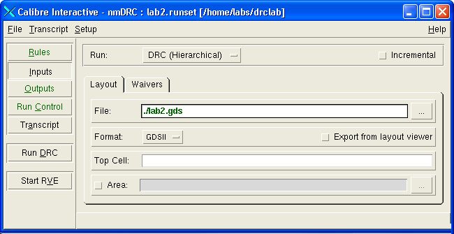

When you invoke
Calibre Interactive directly from within Calibre DESIGNrev, you
can run DRC, LVS, or yield analysis on a cell or area in an open layout
database. After processing, you can view the results using Calibre
RVE, comparing the information returned from DRC or LVS with data
in the layout viewer.
Procedure
- In Calibre
DESIGNrev, choose , Run nmLVS,
or Run DFM.
On opening, the application
queries you for permission to open the last runset used, and displays
the information in the text box.
- If you have a runset defining
the settings for the Calibre run, make sure the pathname for that
file is displayed in the Runset field and click OK.
If you do not have a runset, click Cancel.
Calibre Interactive opens and displays
data from the runset (if used). The Files and Top Cell text boxes
display data about the current view in Calibre DESIGNrev.
Figure 1. Calibre Interactive
- If the Inputs button
on the left side of the window is not selected, click to select
it.
- Make sure Export
from layout viewer is selected. This instructs Calibre
Interactive to use the data in Calibre DESIGNrev as input to the
DRC or LVS run.
- Configure the Calibre runset
as needed.
- (Optional but recommended.)
Configure Calibre Interactive to invoke Calibre RVE on completion
of the run:
- Click the Outputs button
on the left side of the window.
- Select Show results
in RVE.
- Click the appropriate button
(Run DRC, Run LVS,
or Run DFM) to invoke the batch tool.
Once the Calibre run is complete,
the system opens the results database in the Calibre RVE application,
allowing you to step through results and view them in the layout viewer.